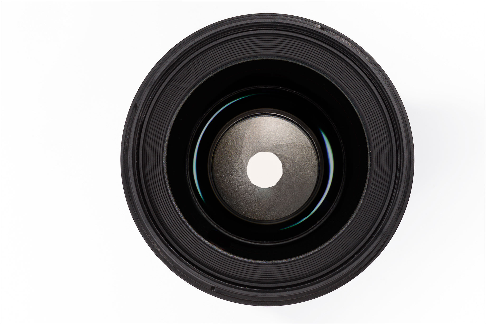

Aperture can be defined as the opening in a lens through which light passes to enter the camera. It is an easy concept to understand if you just think about how your eyes work. As you move between bright and dark environments, the iris in your eyes either expands or shrinks, controlling the size of your pupil.
In photography, the “pupil” of your lens is called aperture. You can shrink or enlarge the size of the aperture to allow more or less light to reach your camera sensor. The image below shows an aperture in a lens:
